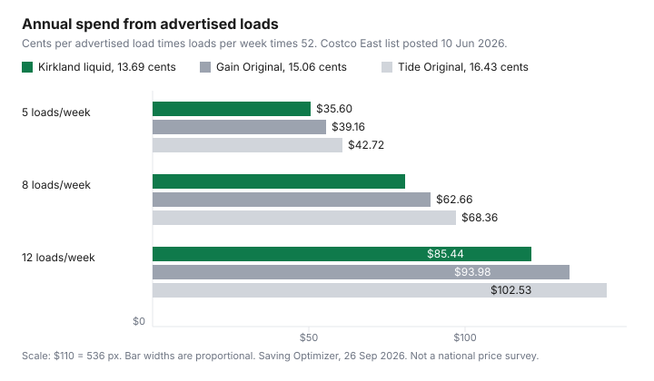

Household Items and Supplies · Canada
Laundry Detergent Cost per Load in Canada: Kirkland vs Tide vs Gain vs Store Brands (2026 Math)
The jug shouts a load count. The shelf tag shouts a price. Neither number is the cost of one wash until you divide them, and the division is wrong if you pour more than the line the bottle uses to invent that load count. This page is the arithmetic for a Canadian laundry room: price, advertised loads, and the dose you actually pour.
The prices below come from two pages opened for this draft. The Costco East cleaning list posted 10 Jun 2026, for a flyer window of 8 Jun to 5 Jul 2026 in Ontario and Atlantic Canada, is the comparison set. A No Frills flyer page for 24 to 30 Sep 2026, nearest store Darren's No Frills at 372 Pacific Ave, Toronto, is used only where the line is a single product with a single price. Walmart.ca did not return a product price on 26 Sep 2026, so Great Value is not in the table. Arm & Hammer and No Name detergent were not on the pages that did load. Energy for the wash itself is the cold-water laundry guide. The dryer is separate.
Disclosure: Cash-back portal types for online household orders are an offer type. Saving Optimizer may earn a commission if we later add a partner link. We do not currently claim a portal partnership. A portal does not change the cents-per-load arithmetic. Education only.
Key takeaways
- Cost per advertised load is price divided by the load count on the package. On the 10 Jun 2026 Costco East list, Kirkland Signature liquid, 146 loads at $19.99, was 13.69 cents. Tide Original, 146 loads at $23.99, was 16.43 cents.
- That Tide price is the figure printed beside a $6.00 instant saving the list said expired 5 Jul 2026. After the date, re-read the tag. Do not keep using 16.43 cents.
- Tide.ca liquid directions checked 26 Sep 2026 say medium loads to bar 1, large loads to bar 3, and an HE full load to bar 5. Past the line, the advertised count no longer holds. A claim that most homes use 1.5 to 2 times the HE dose was not on a maker page we opened, so it is not treated as a measured fact.
- Pods on that list cost more per advertised load than Kirkland liquid. The premium is convenience. It is not automatically a saving.
- Stock up when the new cents per real load beat your price book. A coupon date, a Shoppers bonus event, or a Canadian Tire flyer is only the moment you re-run the division.
How to calculate cost per load from any Canadian shelf tag (with worked examples)
Write three numbers before you pick up the jug. The price you will pay, after the instant saving if one is still in its dates. The load count printed on the bottle. The dose you will pour, compared with the dose that load count assumes. Cost per advertised load is price divided by loads. Cost per real load is price divided by the loads you will get at your dose.
Worked example from the Costco East list posted 10 Jun 2026. Kirkland Signature laundry detergent, 146 washloads, $19.99. $19.99 divided by 146 is $0.1369, which is 13.69 cents per advertised load. Tide Original, 146 washloads, $23.99, with a $6.00 instant saving the list said expired 5 Jul 2026. $23.99 divided by 146 is 16.43 cents. Gain Original, 146 washloads, $21.99, is 15.06 cents. The same jug size in the advertisement does not mean the same price per load. Here the load counts match, so the cheaper jug is the cheaper load. When the counts do not match, the sticker lies.
If you pour twice the labelled line, you get half the advertised loads and you pay twice the cents per load. That double is arithmetic, not a survey of Canadian laundry rooms. Kirkland at a double dose would be 27.38 cents. Tide Original at a double dose would be 32.86 cents. The gap between brands stays. The level of both bills rises. The unit-price guide is the same habit in the grocery aisle: convert, then compare.
A grouped flyer line is not a clean input. The No Frills page for 24 to 30 Sep 2026 listed Tide Simply liquid laundry detergent, 2.72 L, or Fleecy fabric softener, 3.5 L, or dryer sheets, 200s, at $7.99. Three products share one price, and no load count is printed on that line. This guide does not turn $7.99 into a cents-per-load figure. If you are in that store, read the jug for loads or millilitres, confirm which of the three items is $7.99, and divide.
2026 CAD comparison table: Kirkland, Tide, Gain, Arm & Hammer, Great Value, No Name, laundry sheets
Arm & Hammer, Great Value, No Name detergent, and laundry sheets are absent because a shelf price for them was not on a page opened on 26 Sep 2026. Walmart.ca blocked the product page. The rows below are the laundry liquids, pacs, and one value brand that the Costco East list actually priced. "Cents at double dose" is the advertised figure times two. It is what happens if you pour twice the line. It is not a claim that you do.
| Product | Advertised loads | Price | Cents per advertised load | Cents if you pour twice the line |
|---|---|---|---|---|
| Kirkland Signature laundry detergent | 146 | $19.99 | 13.69 | 27.38 |
| Kirkland Signature Free & Clear | 146 | $19.99 | 13.69 | 27.38 |
| Gain Original | 146 | $21.99 | 15.06 | 30.12 |
| Tide Original, with a $6 instant saving the list said expired 5 Jul 2026 | 146 | $23.99 | 16.43 | 32.86 |
| Tide Ultra Coldwater Clean | 124 | $27.99 | 22.57 | 45.15 |
| Tide Free & Gentle | 100 | $24.99 | 24.99 | 49.98 |
| Tide Ultra Advanced Power | 89 | $26.99 | 30.33 | 60.65 |
| Kirkland Signature laundry detergent pacs | 152 | $26.99 | 17.76 | Not a pour. One pac is one dose unless you use two. |
| Kirkland Signature OxiPower laundry pacs | 110 | $24.99 | 22.72 | Same note. Two pacs doubles it. |
| Tide Pods Spring Meadow | 152 | $37.99 | 24.99 | Two pods would be 49.99 cents. |
| Tide Pods with Downy | 104 | $33.99 | 32.68 | Two pods would be 65.37 cents. |
| Tide Pods Hygienic Clean | 79 | $34.99 | 44.29 | Two pods would be 88.58 cents. |
| Purex After the Rain, and Purex Cold Water | 250 | $21.99 each | 8.80 | 17.59 |
| Springtime Ultra | 250 | $17.99 | 7.20 | 14.40 |
Purex and Springtime win the advertised-cent column on that list. This page does not rank cleaning results. A cheaper advertised load that you have to rewash is a second load. If a household needs the Free & Clear jug, both Kirkland and Tide have a row. Kirkland Free & Clear matches the 13.69 cent Kirkland liquid. Tide Free & Gentle on this list was 24.99 cents per advertised load. Sensitive-skin choice is still a choice. It is just no longer an unpriced one.
Overdosing: why most households use 1.5–2x the detergent their HE washer needs
The heading is the question people ask. The sourced answer is narrower. On 26 Sep 2026, tide.ca liquid pages for Ultra OXI, Clean Breeze, and Tide plus a Touch of Downy said: measure with the cap; medium loads to bar 1; large loads to bar 3; HE full loads to bar 5. Simply Clean & Fresh said medium just below bar 1, large just below bar 3, and an HE full load to bar 5. The pages say to follow the package. They do not say that most Canadian households pour 1.5 to 2 times those lines. No dated study with that multiple was opened for this draft, so the multiple is not used as a fact.
What the lines do support is a check you can run tonight. Find the bar for the load you are about to wash. Fill to that bar, not to the story you tell about "a capful." An HE machine is built for a low-water wash. Suds that do not rinse are not a sign you needed more detergent. They are a sign the dose was past the line, or that a non-HE dose was poured into an HE tub. The bottle's load count is the count at those lines. Your cost per load is the advertised figure only when you pour that line.
If you want a personal multiple, mark the jug. Note the date and the fill level. When it empties, divide days into the advertised loads. A jug that was supposed to last 146 loads and lasted 80 was not a 13.69 cent detergent. It was 19.99 dollars divided by 80, which is 25.0 cents. That number belongs in the price book. The brand argument can wait.
Pods vs liquid vs powder: convenience premium in cents per load
On the same Costco East list, one Kirkland pac was 17.76 cents and one Tide Pod from the 152-count box was 24.99 cents. Kirkland liquid was 13.69 cents per advertised load. The pac is 4.07 cents more than that liquid per advertised load. Tide's 152-count pod is 11.30 cents more than Kirkland liquid, and 7.23 cents more than the Kirkland pac. Over 416 loads, which is 8 loads a week for 52 weeks, 4.07 cents is $16.93 and 11.30 cents is $47.01. Those are calculated gaps at the advertised dose, not a promise you will wash 416 times.
The premium buys a pre-measured dose. It is rational if the alternative is a heavy pour. It is expensive if you already hit bar 1. Using two pods because one "does not feel like enough" throws away the pre-measure. The table's double-pod column is that mistake, priced.
Powder is on the list as Kirkland Oxi powder, 328 washloads at $15.99, which is 4.88 cents per advertised load, and OxiClean Max stain remover, 5.25 kg at $24.99. The Oxi powder row is a booster load count, not a detergent jug. Do not file it as a full detergent unless the label says it replaces one. Nellie's laundry soda, 1,100 washloads at $99.99, is 9.09 cents per advertised load. Read whether that product is the detergent or an add-on before you put 9.09 cents in the price book. This guide does not treat a stain booster as a completed wash.
Online reorders are a separate switch. Subscribe and Save can schedule a jug you already finished. It does not know your cap line. A subscription to a 25 cent pod is still a 25 cent pod.
When to stock up: Costco coupon book cycles, Shoppers bonus events, and Canadian Tire flyers
The list used here is one dated window, not a rule that every month looks like June. Costco East's page posted 10 Jun 2026 covered a flyer from 8 Jun to 5 Jul 2026. Instant savings on that list carried their own end dates, 21 Jun or 5 Jul 2026. Tide Original's $6.00 line was one of the 5 Jul dates. When you see a coupon book, write the expiry next to the price, then divide. A book that ended in July is not a September price.
In the warehouse, Costco's help page on price adjustments, published 10 Sep 2025 and still the page retrieved 26 Sep 2026, says in-warehouse purchases can be adjusted within 30 days if the item is in stock, demonstration stock excluded, and the request falls inside the promotional dates. Membership counter. Online orders point to a different Costco.ca policy. A price drop the week after you bought the jug is a 30-day question, not a reason to return a half-used bottle. The household aisle guide walks through that window again.
Shoppers Drug Mart bonus redemption events change the out-of-pocket price of whatever you were going to buy with points. The method, including why a default 10,000 points is $10 unless a bonus event says otherwise, is the PC Optimum banking guide. Do not move detergent into a bonus event unless the cents per load, after points, beat the warehouse number you just calculated. Points on a worse unit price are a discount on a loss.
Canadian Tire flyers are the third clock. This draft did not open a Canadian Tire detergent price, so there is no cents figure from that banner here. If this week's flyer lists a jug, divide price by loads before you leave the warehouse trip "for later." A flyer that loses on cents per load is not a stock-up. It is a drive.
SVG chart: annual detergent spend at 5, 8, and 12 loads per week
Annual spend at the advertised dose is cents per load, times loads per week, times 52. At Kirkland's 13.69 cents, 5 loads a week is 260 loads and $35.60 a year. Eight loads a week is 416 loads and $56.96. Twelve is 624 loads and $85.44. Gain at 15.06 cents is $39.16, $62.66, and $93.98. Tide Original at 16.43 cents is $42.72, $68.36, and $102.53. The chart draws those nine totals. Double the dose and you double the year. The cold-water decision does not change these cents. It changes the kilowatt-hours, which live on the dryer guide and the cold-wash guide.

Put the winner in a note on your phone: product, cents, date, store. Next time, you are comparing a new tag to 13.69 cents, not to a memory of a big jug. The store-brand guide uses the same Kirkland-versus-Tide gap inside a year of switches. The Costco household aisle asks whether the jug fits the cupboard.
Sources & date stamps
- Costco East cleaning supplies list, posted 10 Jun 2026, flyer window 8 Jun to 5 Jul 2026, Ontario and Atlantic: Kirkland Signature laundry detergent and Free & Clear, 146 washloads, $19.99; Gain Original, 146, $21.99; Tide Original, 146, $23.99, with a $6.00 instant saving the list said expired 5 Jul 2026; Tide Free & Gentle, 100, $24.99; Tide Ultra Advanced Power, 89, $26.99; Tide Ultra Coldwater Clean, 124, $27.99; Tide Pods Spring Meadow, 152, $37.99; Tide Pods Hygienic Clean, 79, $34.99; Tide Pods with Downy, 104, $33.99; Kirkland pacs, 152, $26.99; Kirkland OxiPower pacs, 110, $24.99; Purex After the Rain and Purex Cold Water, 250, $21.99; Springtime Ultra, 250, $17.99; Kirkland Oxi powder, 328 washloads, $15.99; Nellie's laundry soda, 1,100 washloads, $99.99. Page opened 26 Sep 2026.
- tide.ca liquid dosage pages (Ultra OXI, Clean Breeze, Tide plus a Touch of Downy, Simply Clean & Fresh), opened 26 Sep 2026: measure with the cap; bar 1, bar 3, and bar 5 as described in the overdose section. No page stated a 1.5 to 2 times household multiple.
- Costco.ca help, price adjustment for warehouse items, published 10 Sep 2025, opened 26 Sep 2026: 30 days, in stock, inside promotional dates, membership counter. Online orders use a separate page.
- No Frills flyer page on flyers.now for 24 to 30 Sep 2026, nearest store Darren's No Frills, 372 Pacific Ave, Toronto: Tide Simply 2.72 L or Fleecy 3.5 L or dryer sheets 200s at $7.99. Not converted to cents per load. Walmart.ca product pages, Great Value, No Name detergent, Arm & Hammer, and laundry sheets: no usable price opened 26 Sep 2026.
Frequently asked questions
How do I work out cost per load from a shelf tag?
Divide the price you will pay by the number of loads that price will actually produce. The load count on the jug is the count at the labelled dose, not at a full cap. If the tag has no load count, you need the bottle's millilitres and the dose line before the arithmetic works.
Am I using too much detergent in my HE washer?
Tide.ca, checked 26 Sep 2026, tells you to measure with the cap: medium loads to bar 1, large loads to bar 3, and an HE full load to bar 5, on the liquid pages reviewed. Filling past the line for that load uses more than the label. This guide did not find a maker page that says most households use 1.5 to 2 times the HE line, so that multiple is not stated as a fact.
Are pods worth the extra cost?
On the Costco East list posted 10 Jun 2026, Kirkland pacs were 17.76 cents each and Tide Pods, 152 count, were 24.99 cents each. Kirkland liquid was 13.69 cents per advertised load. The pod premium is the gap you pay for not measuring. It is worth it only if you would otherwise pour past the cap line often enough to erase that gap.
Are laundry sheets cheaper per load?
No laundry-sheet price was on the Costco East list or the No Frills flyer page opened for this guide. Use the same division: price divided by sheets you will actually use. A sheet that is one dose is one load. A sheet you tear in half is two, if the box allows that.
When is the best time to stock up on detergent in Canada?
Buy when the cents per real load beat the number in your price book, not when a sign says multi-buy. The Costco East list posted 10 Jun 2026 ran with a flyer window of 8 Jun to 5 Jul 2026, and some instant savings expired 21 Jun or 5 Jul. Shoppers bonus events are a separate lever, on the PC Optimum guide. A Canadian Tire flyer only helps if the unit price wins.